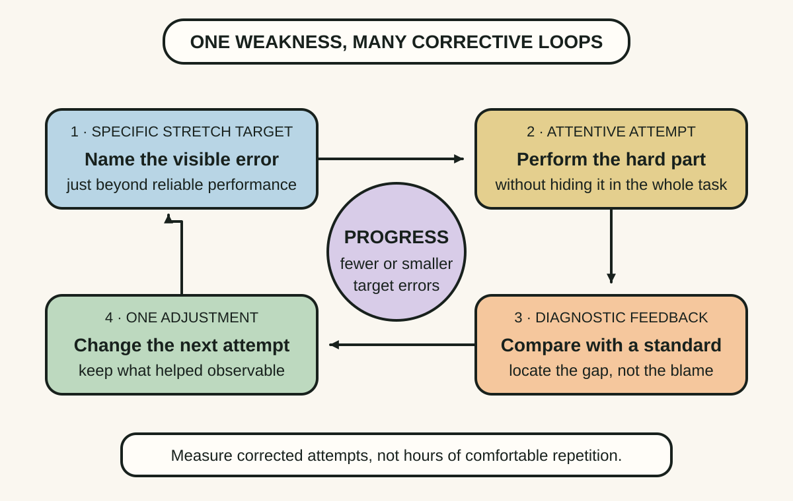
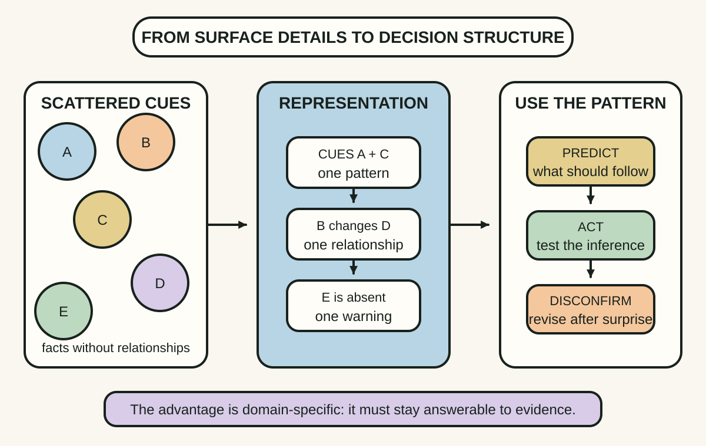
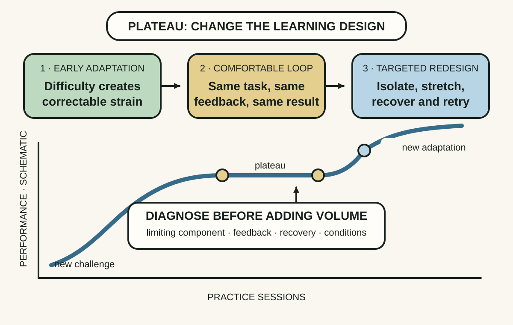

Daily lesson ·
Peak
Improve a skill by isolating a stretch target, using fast feedback and building better mental representations, rather than repeating comfortable performance and calling the hours practice.
Idea 1
Practise the hard part #
The idea
Ericsson and Pool distinguish ordinary repetition from purposeful and deliberate practice. Purposeful practice has a specific goal, full attention, a task just beyond current reliable performance and feedback that reveals what to change. Deliberate practice adds a well-developed field, established training methods and guidance from a teacher or coach who can diagnose the next weakness.
The unit of progress is not another hour spent doing the whole activity. It is a feedback loop around one difficult component: attempt, compare with a clear standard, adjust and attempt again. Work that feels fluent may maintain a skill while producing little further adaptation.

Why it matters
A person can accumulate years of experience while automating the same mistakes. A narrow loop makes the gap visible and gives each repetition a reason to differ from the last one.
Apply it today
Choose one skill you use at work and name a failure you can observe, such as a decision summary that hides the trade-off or a test that misses one boundary.
Create a five-minute drill that produces three attempts at that component, with a checklist, example or reviewer supplying immediate comparison.
Caveat or failure mode
Continuous work is not always a safe practice field. Some tasks are too costly to rehearse in production, and novice learners may not know which error matters. Use simulation, examples or coaching, and protect recovery because difficult focused practice is tiring.
Idea 2
Build mental models that reveal patterns #
The idea
The authors argue that expert performance depends heavily on domain-specific mental representations: organised structures that let a person recognise meaningful patterns, anticipate what comes next and choose an action without treating every detail as separate. A chess expert sees configurations and threats; a musician hears structure and predicts how a passage should sound.
Practice and representation reinforce each other. Better representations make an error easier to notice, while attempts and feedback refine the representation. This is not a claim for a general memory upgrade. The advantage is tied to knowledge and repeated discrimination inside a domain.

Why it matters
A checklist can remind you what to inspect, but a representation helps you interpret the relationship between observations. It turns experience into faster recognition without pretending intuition is reliable outside the conditions that trained it.
Apply it today
Take one recently solved problem and write three columns: cue observed, pattern inferred and action that tested the inference.
Compress the row into one if-then question you could use when a similar situation appears, then keep the evidence that would disconfirm it.
Caveat or failure mode
A representation can become a confident stereotype when the environment changes or the learner ignores disconfirming cues. Keep it linked to observable evidence, test it against varied cases and revise it after surprises.
Idea 3
Treat a plateau as a design problem #
The idea
Ericsson and Pool describe improvement as adaptation. A task beyond current capacity creates strain; focused training followed by recovery produces changes that make the task more manageable. Once the activity becomes comfortable, the same load may maintain the new level without creating the conditions for another improvement.
A plateau therefore calls for diagnosis, not simply more willpower. Break the performance into components, identify the limiting step, adjust difficulty or feedback and seek a method that has helped skilled performers cross a similar barrier.

Why it matters
More effort feels virtuous, but volume aimed at the wrong component can deepen fatigue while leaving the bottleneck untouched. Diagnosis makes effort more selective and recovery part of the learning system.
Apply it today
Name one skill whose result has stopped improving and split the performance into three components you can observe separately.
Circle the component with the clearest gap, then choose one harder but repeatable version and one feedback source for the next session.
Caveat or failure mode
Not every plateau is a training problem. Sleep, workload, pain, unsafe conditions, weak incentives, missing tools or a hard biological constraint can dominate. Do not interpret every limit as evidence that the learner failed to practise correctly.
Knowledge check · 6 questions
Learning check
Answer all 6, then check your answers. Your first result stays in this browser, and each explanation appears after you check. A 3-question review can appear on the homepage from tomorrow.
6 questions not yet answered.
Today's experiment · 10 minutes
Build one five-attempt practice loop
- Choose a skill and write one error that a second person or a clear standard could observe.
- Design an attempt that takes no more than one minute and makes that error likely to appear.
- Complete three attempts, compare each with the standard and change only one thing before the next.
- Write the cue or pattern you can now recognise and the next difficulty increase you would test.
Observable result: You finish with three comparable attempts, one observable correction and a specific next stretch target.
Retrieval practice
Spaced recall
- From Make It Stick: why can a practice session that feels fluent produce weaker later retrieval than a more effortful one?
- From Working Identity: what makes a small experiment capable of changing a hypothesis rather than merely expressing interest?
Verification
Source notes
These links support the attributed claims and edition details; applications and extensions are labelled in the lesson.
One-sentence takeaway